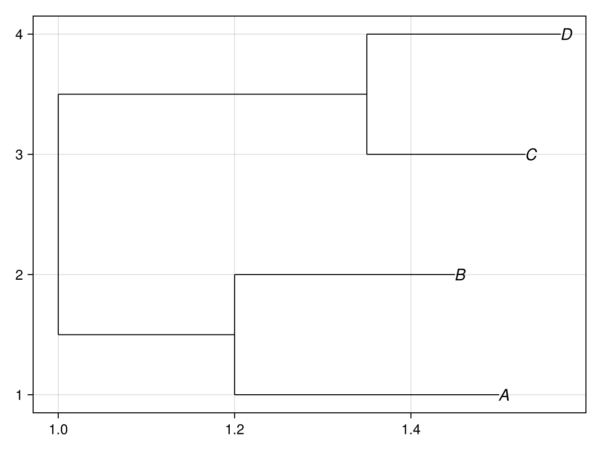
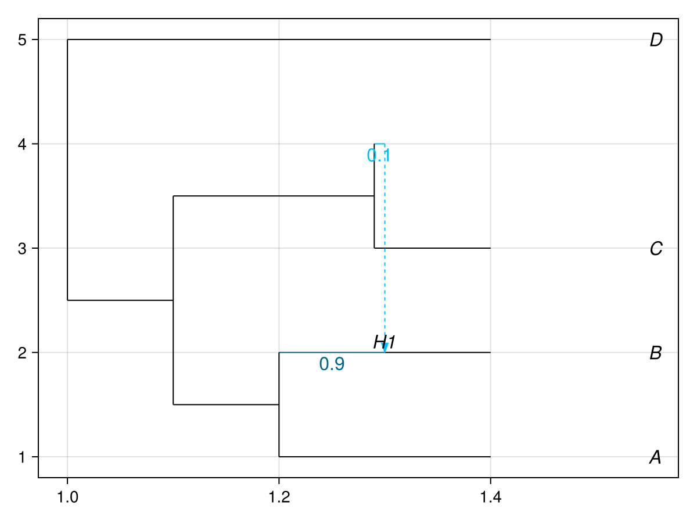
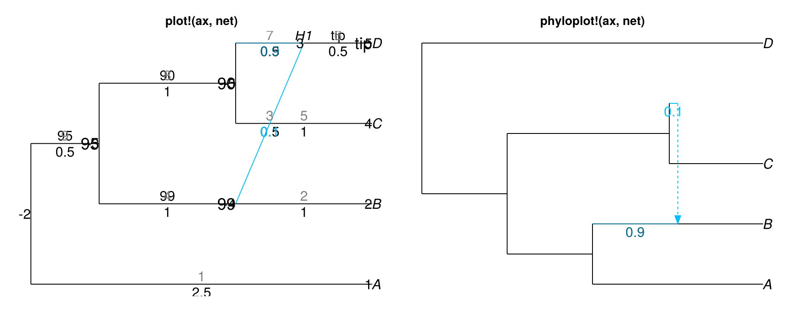

Public API
PhyloMakie exposes one Makie-native public owner for PhyloNetworks.HybridNetwork plotting. plot(net) and plot!(ax, net) are the primary Makie surfaces, while phyloplot and phyloplot! remain thin generated convenience surfaces over the same owner.
Legacy public spellings such as showtiplabel, xlim, and preorder are rejected at the recipe boundary. Internally, the public owner resolves one PhyloPlotAttributes payload and passes it directly to the helper and render owners. The supported attribute set below is rendered from the live package constant SUPPORTED_PHYLOPLOT_ATTRIBUTES.
Supported entry surfaces
| Surface | Return contract | Notes |
|---|---|---|
plot(net) | Makie.FigureAxisPlot | Primary non-mutating Makie surface |
plot!(ax, net) | PhyloPlot on an existing Makie axis | Primary mutating Makie surface |
phyloplot(net) | Makie.FigureAxisPlot | Thin convenience surface over the same owner |
phyloplot!(ax, net) | PhyloPlot on an existing Makie axis | Thin convenience surface over the same owner |
Live public attribute set
| Public attribute |
|---|
useedgelength |
showtiplabel |
shownodelabel |
shownodenumber |
showedgelength |
showedgenumber |
showgamma |
edgecolor |
defaultedgecolor |
majorhybridedgecolor |
minorhybridedgecolor |
edgewidth |
minorlinetype |
arrowlen |
nodelabel |
edgelabel |
nodecex |
edgecex |
nodelabelcolor |
edgelabelcolor |
edgenumbercolor |
nodelabeladj |
edgelabeladj |
tipoffset |
tipcex |
xlim |
ylim |
style |
Intentional boundary
plot(net)returns aMakie.FigureAxisPlot.plot!(ax, net)plots into an existing axis and preserves Makie bang semantics.phyloplotandphyloplot!are convenience surfaces over the same owner.preorderstays internal to the package and is not part of the public surface.
plot(net) pure-tree example
This is the primary non-mutating Makie entry surface on a tree-only network.
tree_net = PhyloNetworks.readnewick(
"((A:0.3,B:0.25):0.2,(C:0.18,D:0.22):0.35);",
)
plot(
tree_net;
useedgelength = true,
showtiplabel = true,
style = :fulltree,
)
plot(net) reticulate example
This is the same primary non-mutating Makie entry surface on a network with a hybrid edge.
net = PhyloNetworks.readnewick(
"(((A:.2,(B:.1)#H1:.1::0.9):.1,(C:.11,#H1:.01::0.1):.19):.1,D:.4);",
)
plot(
net;
useedgelength = true,
showgamma = true,
shownodelabel = true,
tipoffset = 0.15,
style = :fulltree,
)
plot!(ax, net) example
This mutating Makie surface plots into an existing axis and accepts the same snake_case attribute set. The second axis uses the convenience surface phyloplot! to show that both public paths share the same owner and remain composable.
annotation_net = PhyloNetworks.readnewick(
"(A:2.5,((B:1,#H1:0.5::0.1):1,(C:1,(D:0.5)#H1:0.5::0.9):1):0.5);",
)
nodelabel = DataFrames.DataFrame(
node=[-5, -3, -4, 5],
label=["90", "95", "99", "tip"],
)
edgelabel = DataFrames.DataFrame(
edge=[8, 9, 4, 6],
label=["90", "95", "99", "tip"],
)
figure = Figure(size=(920, 360))
left_axis = Axis(figure[1, 1], title="plot!(ax, net)")
right_axis = Axis(figure[1, 2], title="phyloplot!(ax, net)")
hidedecorations!(left_axis)
hidespines!(left_axis)
hidedecorations!(right_axis)
hidespines!(right_axis)
plot!(
left_axis,
annotation_net;
useedgelength = true,
shownodelabel = true,
shownodenumber = true,
showedgelength = true,
showedgenumber = true,
showgamma = true,
nodelabel = nodelabel,
edgelabel = edgelabel,
nodecex = 1.2,
edgecex = 1.0,
xlim = (0.0, 6.5),
ylim = (0.0, 5.5),
style = :majortree,
)
phyloplot!(
right_axis,
PhyloNetworks.readnewick("(((A:.2,(B:.1)#H1:.1::0.9):.1,(C:.11,#H1:.01::0.1):.19):.1,D:.4);");
useedgelength = true,
showgamma = true,
arrowlen = 0.12,
style = :fulltree,
)
figure
Next steps
- Use Render verification for live CairoMakie-backed capability artifacts.
API docs
PhyloMakie.phyloplot — Function
No docstring defined.
Plot type
The plot type alias for the phyloplot function is PhyloPlot.
Attributes
arrowlen = nothing — No docs available.
defaultedgecolor = nothing — No docs available.
edgecex = 1 — No docs available.
edgecolor = "black" — No docs available.
edgelabel = DataFrame() — No docs available.
edgelabeladj = [0.5, 0] — No docs available.
edgelabelcolor = "black" — No docs available.
edgenumbercolor = "grey" — No docs available.
edgewidth = 1 — No docs available.
majorhybridedgecolor = "deepskyblue4" — No docs available.
minorhybridedgecolor = "deepskyblue" — No docs available.
minorlinetype = nothing — No docs available.
nodecex = 1 — No docs available.
nodelabel = DataFrame() — No docs available.
nodelabeladj = 1 — No docs available.
nodelabelcolor = "black" — No docs available.
showedgelength = false — No docs available.
showedgenumber = false — No docs available.
showgamma = false — No docs available.
shownodelabel = false — No docs available.
shownodenumber = false — No docs available.
showtiplabel = true — No docs available.
style = :fulltree — No docs available.
tipcex = 1 — No docs available.
tipoffset = 0 — No docs available.
useedgelength = false — No docs available.
xlim = nothing — No docs available.
ylim = nothing — No docs available.
PhyloMakie.phyloplot! — Function
phyloplot! is the mutating variant of plotting function phyloplot. Check the docstring for phyloplot for further information.
PhyloMakie.PhyloPlot — Type
PhyloPlot is the plot type associated with plotting function phyloplot. Check the docstring for phyloplot for further information.